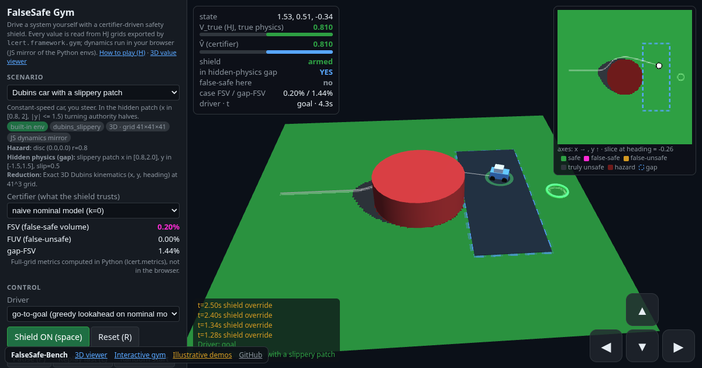
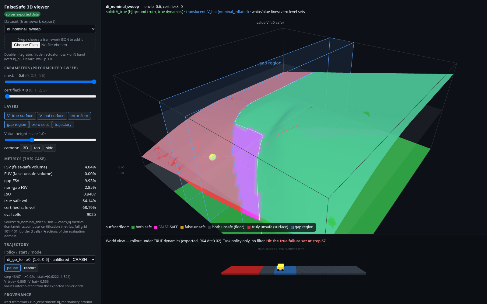

FalseSafe-Bench
When a robot learns its own safety check, how often does it say “safe” when a crash is actually unavoidable?
Robots and AI systems increasingly learn their own physics, and their own safety checks, from data. In places they never saw, a learned check can be confidently wrong. FalseSafe-Bench measures how often and how badly: it computes the exact true answer (Hamilton-Jacobi reachability on a grid) and compares it with what each learned certifier claims. New to the terms? See the plain-language glossary.
Three takeaways
All numbers: double integrator, 30 preregistered seeds, 201×201 grid. Source: claims_ledger.md, sweep results/sweeps/20261027_184119.
Interactive demos (real solver output)

Interactive gym
What it is: drive a cart, drone, pendulum, boat, car or rover yourself, with a learned safety shield. What to look for: the magenta “false-safe” cells on the minimap, where the shield trusts a wrong answer. Includes a guided tour and a “Try this” list.
3D value-function viewer
What it is: the true and the learned safety surfaces from the solver, in 3D, for 7 exported datasets. What to look for: where the learned surface is above zero and the true one is below it.Detailed results
| Claim | Result | Status |
|---|---|---|
| P1: FSV reduction from epistemic inflation, k=2 vs k=0 (ratio of means, 95% BCa) | 40.34% [36.47%, 44.73%]; FSV 0.0096 → 0.0057 | partially supported (preregistered bar was ≥50%) |
| S1: where false-safe volume sits | 87.3% of nominal FSV is inside the gap | post hoc |
| S1: reduction outside vs inside the gap | 89.1% outside (0.00145→0.00016) vs 33.3% inside (0.0534→0.0356) | post hoc |
| Cost: FUV k=0 → k=2 | 0.0001 → 0.0018; break-even r* = 0.45 | confirmatory auxiliary |
Older illustrative demos
Hand-built geometry and toy in-browser maths, kept for intuition only. Not solver output.
Docs and notes
- README.md
- claims_ledger.md
- PREREGISTRATION.md
- PREREGISTRATION_v2.md
- SCOPE.md
- ALGORITHMS.md
- docs/FRAMEWORK.md
- docs/COMPREHENSIVE_REPORT.md
GitHub repository · PR #1 (framework + 3D viewer)
Built by scripts/build_site.py. Feedback and collaboration welcome via GitHub issues.